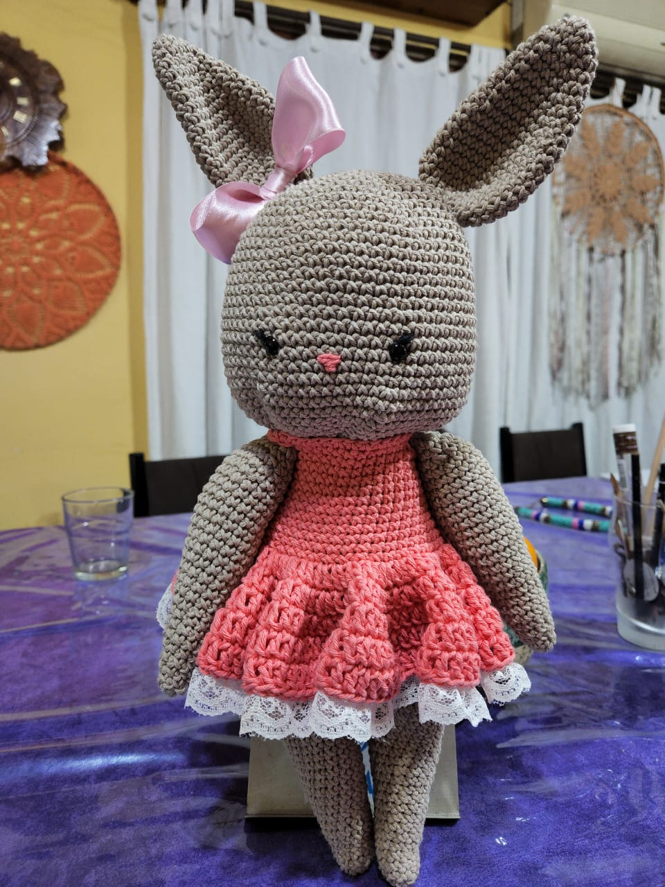

Corazón de Tiza
Sobre nosotros
¡Bienvenidos a Corazón de Tiza!

Soy una amante del crochet, dedicada a tejer mandalas, amigurumis, accesorios, ropa, etc. utilizando la técnica del crochet.
Mi objetivo es que conozcan mi trabajo y que todos puedan apreciar la pasión y dedicación que tiene cada uno de ellos. .